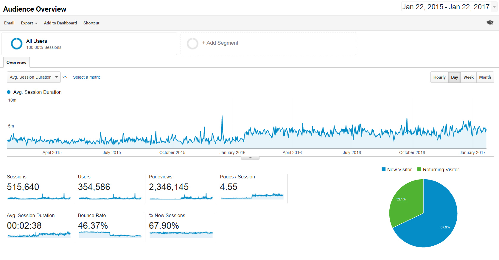
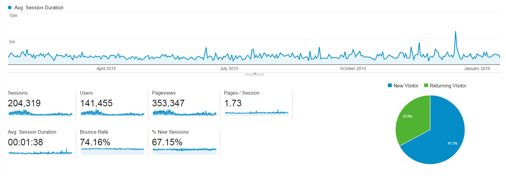
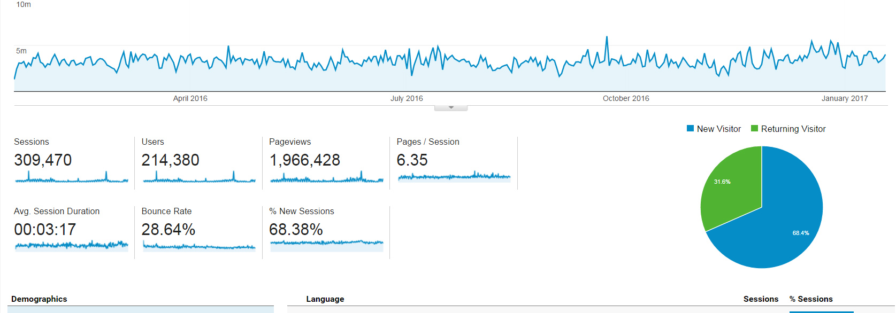

Legislative Coordinating Commission
Maps and Apps from the State Legislature
Presented by Chris Cantey / @chriscantey / github/ccantey
Who Am I?
Sr. IT Specialist

Bachelor's Degree in Land Surveying & Mapping Science
Master's Degree in Cartography & GIS
Who is the LCC?
Non-partisan umbrella organization
Legislative commissions
Joint offices
GIS Office: Lee Meilleur
What we do...
Geospatial & IT Services
Information Technology - MnIT
Commission Websites
Legacy Amendment
Geographic Information Systems (open-source)
Data
Legislative Districts
House of Representatives - Senate
Aggregate and compile ACS - Demographic Profiles
Redistricting
Decennial
Maps
Paper Maps
Maps
Data Driven Maps | ArcPy
Precincts (4000+)
Maps
Interactive Maps
Leaflet Marker Clusters
// this method defines how the graduated symbol clusters are created
iconCreateFunction: function (cluster) {
// get the number of items in the cluster
var count = cluster.getChildCount();
// figure out how many digits long the number is
var scale;
// Set graduated symbol scaling
if (count <= 10) {scale = 1;}
if (count > 10 && count <= 75) {scale = 2;}
if (count > 75 && count <= 500) {scale = 3;}
if (count > 500) {scale = 4;}
return new L.divIcon({
html: count,
className:'cluster scale-' + scale,
iconSize: null
});
} //end iconCreateFunction method
}).addTo(overlays); //end clusters object
//add points to clusters markergroup
clusters.addLayer(LegacyProject);
Design Matters!
Because User Experience Matters!
Google Analytics
Before & After
 But I'm Not a _______!

No, but you are a cartographer!
THE END
- Questions
- Comments